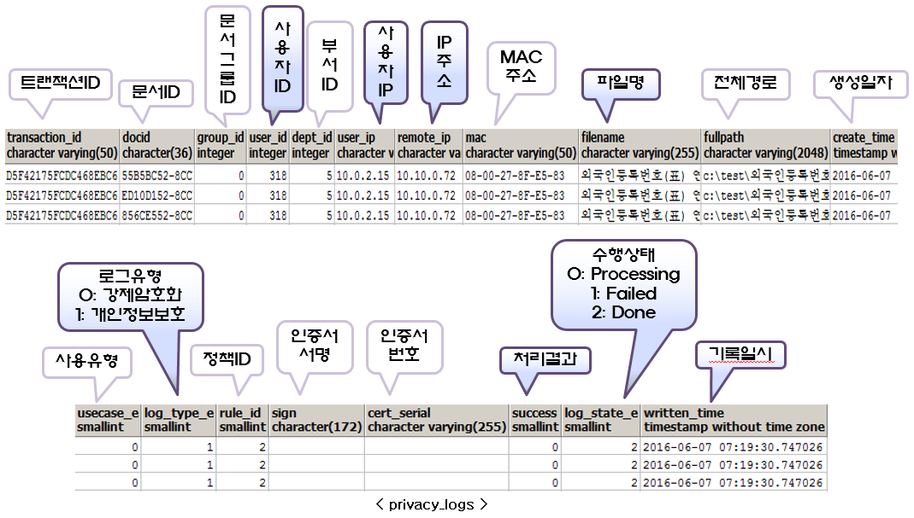

개인정보 검사이력 (privacy_log_summary, privacy_logs)
-
개인정보 검사이력 페이지는 ShadowCube 사용자 PC에서 일괄암호화(scencbatch.exe)가 종료된 후 개인정보가 포함된 문서가 있는 경우 기록되는 로그이다.
-
privacy_log_summary 는 데이터를 유지하지만, privacy_logs 테이블의 데이터는 개인정보 로그 관리 스케쥴에 의해 삭제된다.
-
정책센터 > 환경설정 > 예약된 작업 > 스케쥴 설정 > 개인정보 로그 관리 탭에서 유지할 로그 갯수를 설정하면 거기에 맞게 privacy_logs 테이블을 transaction_id 별로 삭제한다.
※ 테이블 설명

이전